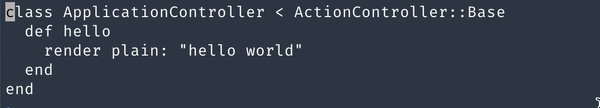
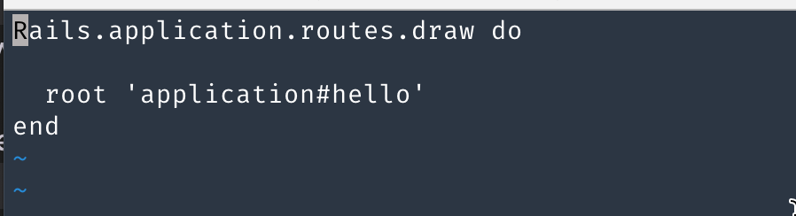
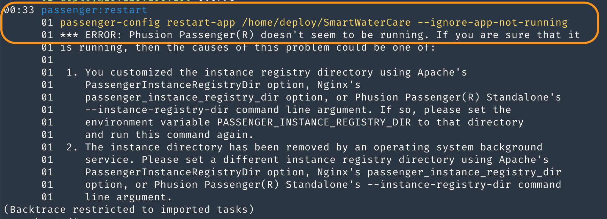
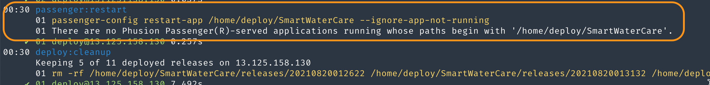
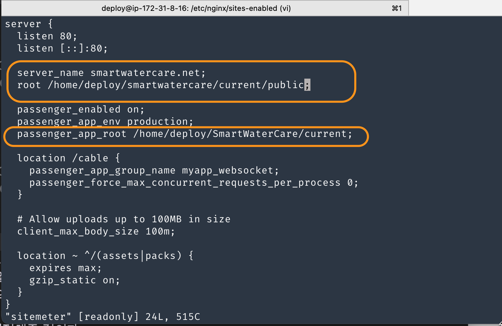
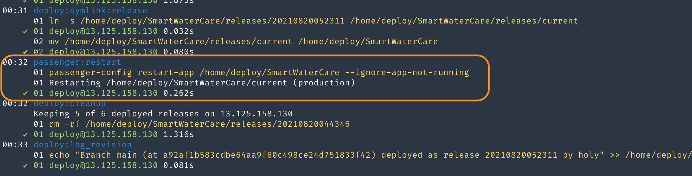
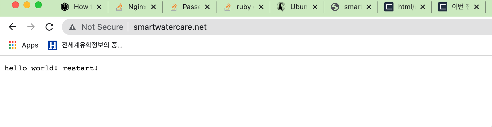

Rails From Scratch2
Table of Contents
1 개요
우선 rails from scratch1을 통해서 서버의 설치와 capistrano의 개발환경이 완료되었다는 가정하에 시작한다. 설치가 다 되었다 하더라도 webpage가 화면에 보이지는 않을것이다. 흔한 controller와 view page조차 없을것이기 때문이다.
2 hello world
가장 먼저 할것은 hello world의 출력이다. rails g controller나 rails g scaffold를 사용하지 않고 처음 바닐라 상태에서 hello world의 출력이다. 이것은 applicationcontroller에서 def hello안에 render plain: "hello world"를 작성하고 routes를 설정해주면 된다.

Figure 1: hello1

Figure 2: hello2
3 [error] phusion passenger
헉! 근데 cap production deploy하니, phusion passenger 에러가 발생했다. nginx 서버를 restart를 여러번 하니 2번째와 같이 에러 모양이 변경되었다. 어찌 되었던 phusion passenger가 동작을 안하는건 확실했다. 에러가 난곳에서 가져온 명령어도 여러번 실행했고, cap production deploy도 여러번 했다.
참고로 적는다.
- sudo systemctl restart nginx
- sudo passenger-config restart-app /home/deploy/SmartWaterCare/current –ignore-app-not-running

Figure 3: perror1

Figure 4: perror2
그러다가 발견한 해결책…해결책이랄껀 없고, 여튼 webpage가 보이게 할 수 있었다는… 방법은 nginx의 거의 유일한 설정파일인 /etc/nginx/sites-enabled/설정파일에서 잘못된 부분을 고쳤다. 첫번째로 servername으로 _만 기술 되어 있었기 때문에 위에 보이는 1번째 error가 발생한듯하다. 그리고 servername에 domain name을 제대로 입력해주니, 2번째 error로 바뀌었다. 2번째 에러를 고친것은 current폴더의 경로를 지정해준 것이다.

Figure 5: psolve1
그 결과 cap production deploy를 하면 다음과 같이 passenger가 동작되었다.

Figure 6: presult

Figure 7: presult2